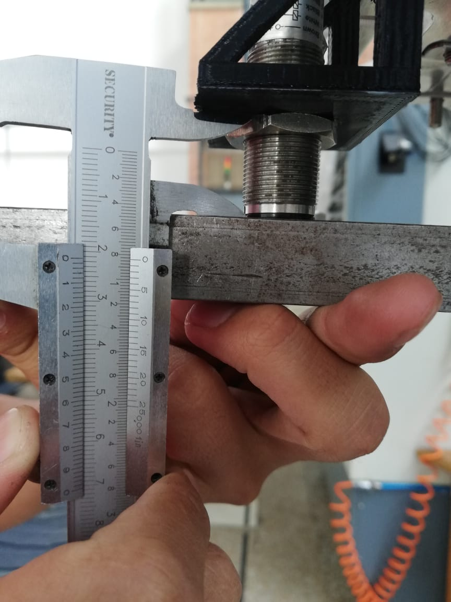
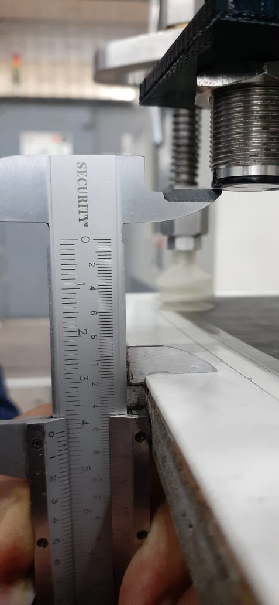

Sensor foto sensible¶
Referencia: FT18M-CP2 Configuración: NPN
| Controlador (CN309) | Num. cable Controlador | Caja de paso | Sensor |
|---|---|---|---|
| B3 | 13 | 5 (PL9) | Black |
| B7 | 12 | 6 (PL10) | Blue |
| B19 | 11 | 7 (PL11) | Brown |
A continuación se muestra el reglaje que debe respetarse con respecto a la instalación del sensor, el cual debe estar 21.8 mm por debajo de la base como se muestra en la siguiente imagen.
Igualmente la distacia de deteccion del sensor es de 40 mm como se muestra en la siguiente imagen.
